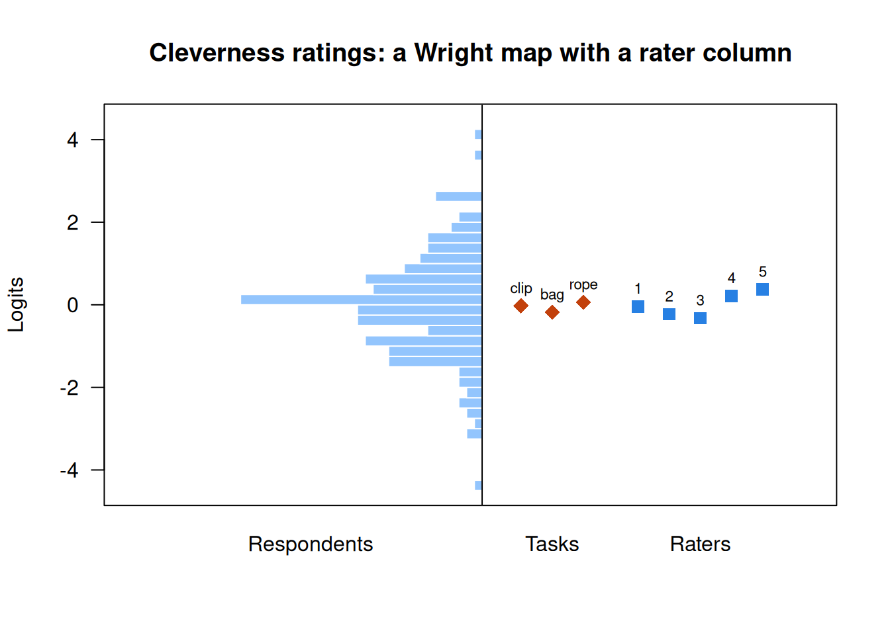

Rater models: many-facet Rasch and beyond
What this is for
When each essay is read by whichever teacher it was assigned to, a harsh teacher is not noise to be averaged away: it is a bias in the scores of the essays that teacher happened to read. Many sources of error: generalizability theory summarized raters with a variance component, which answers a design question (how many raters?) but not a respondent’s question: was I scored by a harsh rater, and what would my score have been otherwise? This lesson gives each rater parameters of their own inside an item response model: severity in the many-facet Rasch model, centrality and halo, the hierarchical rater model for several ratings of one response, and drift. In the cleverness ratings the raters differ modestly and adjusting changes little; in the essays, teachers differ by about half a point, and an expert benchmark lets us check the adjustment.
Goals
By the end of this lesson you should be able to:
- write the many-facet Rasch model, and say what a rater’s severity is and what the rating design must provide to estimate it;
- fit the model with
TAM, read a Wright map with a rater column, and adjust scores for the raters a respondent drew; - tell severity, centrality and halo apart, and say what data would show each;
- explain why the hierarchical rater model gives extra ratings of one response less credit than the many-facet model does;
- say what treating a rater as a fixed parameter, a random effect or a variance component assumes, and what each answers.
Core ideas
Which rater, and by how much?
G theory and a rater model can be fitted to the same ratings (Sudweeks, Reeve & Bradshaw, 2004), and G theory can itself be written as an item response model (Briggs & Wilson, 2007). They report different things. G theory says how large the rater component is, which is what you need to choose a design. A rater model says that rater 5 is 0.37 logits harsher than average, with a standard error, which is what you need to fix one respondent’s score. When every respondent has the same raters, severity shifts everyone alike and the two agree on ranking; when raters vary across respondents, they part.
The many-facet Rasch model
Add a rater. For respondent \(j\), task \(i\) and rater \(r\), the many-facet Rasch model (Linacre, 1989; Eckes, 2011) writes the log-odds of category \(k\) over \(k-1\) as \[\log\frac{\Pr(x_{ijr} = k)}{\Pr(x_{ijr} = k-1)} = \theta_j - b_i - \rho_r - \tau_k .\] \(\rho_r\) is the rater’s severity: a harsh rater acts like a harder item. The steps \(\tau_k\) are shared by every task and rater. Raters are a third facet, and go on the Wright map beside the tasks (Engelhard, 1994, for essays; Eckes, 2005, for writing and speaking tests).
The Rasch algebra carries over: given the raters a respondent drew, the sum of the ratings is sufficient, and the estimate solves “expected total = observed total”. The expected total depends on the raters, so equal raw totals from different raters give different estimates. That is the adjustment. Its usual report is the fair average, the rating a respondent would be expected to get from an average rater on average tasks (Linacre, Facets manual).
The adjustment has a price in design: severity and ability are separated only if the raters are linked, their respondents overlapping directly or through a chain of raters.
Try it: one harsh rater
Two hundred simulated respondents do three tasks, rated 1–5 by some of five raters drawn at random; rater 5 is harsher by the amount set below. Left: the raw mean rating. Right: the model’s estimate of \(\theta\), with the severities known (as after calibration).
At the starting values, respondents who drew rater 5 sit 0.19 SDs lower on the raw mean than others with the same \(\theta\); the model’s estimate removes the gap (0.02). Push the harshness to 2 and the raw gap doubles, to 0.40. Give everyone all five raters and the gap is zero for both.
Should you adjust? That rests on three assumptions: the design is linked, severities differ by more than their standard errors, and a rater’s severity is the same for every respondent. In the case that scores go to individuals, raters vary across respondents, and those assumptions hold, the adjusted score estimates what an average rater would have given; the essays below come with an expert benchmark that lets us check how much closer it gets. When every respondent had the same raters, the adjustment can’t change the order, so for ranking the raw mean may be sufficient.
Beyond severity: centrality and halo
Severity is where a rater sits. Centrality is how a rater uses the scale: a central rater avoids the ends and piles ratings in the middle, which shows up as rater-specific steps pulled apart. Halo: a rater’s overall impression colours every criterion, so criteria move together more than the performance does (Thorndike, 1920, described it; Saal, Downey & Lahey, 1980, review how halo and other rating errors have been defined and measured). Each is a question for the data, not a charge against a rater: highly correlated criteria may reflect essays whose qualities do go together.
Try it: a central rater
One rater’s ratings over a population of respondents, next to a typical rater’s. Severity moves the steps together; spread stretches them apart (above 1) or squeezes them (below 1).
With the steps spread by 1.6, the rater gives a 3 to 48% of respondents (against 36%) and the SD falls from 0.98 to 0.77, while the mean barely moves (2.95 against 2.97). Set spread to 1 and severity to 0.8, and the mean falls to 2.55 instead. Centrality is invisible in a rater’s mean, so one severity per rater misses it.
The hierarchical rater model: raters rate the response
The many-facet model applies that assumption to ratings: five ratings of one response count as five items, and each extra rater shrinks the standard error of \(\hat\theta\) as an extra item would. But the five raters read the same response. If the respondent had an off day on the rope task, all five see a weaker list.
The hierarchical rater model (Patz, Junker, Johnson & Mariano, 2002) puts the response between respondent and raters. Each response has an ideal rating \(\xi_{ij}\), the category a perfectly accurate rater would give, generated from \(\theta_j\) by a polytomous item response model; each rater reports \(\xi_{ij}\) with a severity and precision of their own; DeCarlo, Kim and Johnson (2011) use a signal-detection model for that layer. More raters pin down \(\xi_{ij}\), and \(\xi_{ij}\) is one observation of \(\theta_j\), so the information about \(\theta_j\) from one response can never exceed what the ideal rating carries. Wilson and Hoskens (2001) model the same dependence with a rater bundle model and argue that ignoring it understates measurement error.
Try it: more raters, same responses
A binary version of both models: ten items at difficulty 0, a respondent at \(\theta = 0\), each ideal rating a Rasch item, and each rater reporting it correctly with the probability set below.
With raters who are right 80% of the time, 20 raters give a standard error of 0.634 under the hierarchical model, a hair above the floor of 0.632 set by the ideal ratings, against 0.236 if the ratings were independent. With one rater the models agree. Sharper raters (0.95) reach the floor with five raters; nothing goes below it (Go deeper, below).
The hierarchical model’s item response layer can be multidimensional (Nieto & Casabianca, 2019) or longitudinal (Casabianca, Junker, Nieto & Bond, 2017). With one rating per response the two models agree (the widget above); with several, they rest on different assumptions about whether ratings of one response are independent given \(\theta\), and that is something the data can speak to, as in the cleverness ratings below. The many-facet model’s parameters are simple to read and it fits in seconds, which matters when the raters are the object of study (monitoring a scoring session).
Raters change, and raters are many
A severity is a parameter only if it stays put. Add time to the rater term and test it: Myford and Wolfe (2009) give indices for raters whose accuracy or use of the scale changes during scoring. In two years of classroom-observation ratings of 458 teachers, Casabianca, Lockwood and McCaffrey (2015) found drift that was very large in raters’ first days and persisted for nearly two years, and the variability among raters grew rather than shrank. Their model is a G study with time trends: drift is a variance component and a rater parameter at once.
Try it: drift
Eight raters score for 30 days, each moving by a fixed amount per day: a shared drift plus a part of their own.
A shared drift moves the dark line and leaves the spread alone. Raters’ own drift fans the lines out: at the starting values the SD across raters grows from 0.36 to 0.54, the pattern Casabianca et al. found, and a severity estimated on day 1 is out of date by day 30.
Two design points follow. First, raters must stay linked over time. A linkage set, responses scored by most or all raters, helps: Casabianca, Donoghue, Shin, Chao and Choi (2023) found that a large one spanning the score scale improved connectedness, that two human ratings connected raters better than one human plus an automated engine, and that engine scores alone did not connect raters adequately. Second, with hundreds of raters rating a handful each, severities can be treated as random effects, which assumes raters come from a common distribution and shrinks each severity toward the mean in proportion to how little each rater rated (De Boeck, 2008, does the same for items; fitted with lme4, Bates, Mächler, Bolker & Walker, 2015). The random-effect variance is G theory’s \(\sigma^2_r\) again. What is an item? develops random effects in item response models, and AI and psychometrics treats an automated scoring engine as one more rater.
Simulate
The code simulates 200 respondents, three tasks and five raters, one harsh (rater 5) and one central (rater 4, steps stretched by 1.6), with two raters per respondent. It fits the many-facet Rasch model with TAM (Robitzsch, Kiefer & Wu, 2025), then rater-specific steps, and compares raw means with the model’s estimates. Loading TAM takes 20 to 30 seconds the first time; the fits take a second or two.
With the seed as written, the severities come back within 0.14 of the truth; rater 5’s has the largest standard error (0.13), since TAM derives the last rater’s value from the others’. Rater 4’s first-to-last step span is 8.6 logits against 4.9 to 5.8 for the rest (truth 8.8 and 5.5). The raw mean and the estimate correlate about equally with \(\theta\) (0.90 and 0.91), but respondents who drew rater 5 sit 0.17 SDs low on the raw mean and 0.02 on the estimate. Set per <- 5 and both correlations rise to 0.96, with no gap. Try a harsher rater 5, or spread of 1 for everyone.
With real data
Code
suppressPackageStartupMessages({library(TAM); library(sirt); library(lme4)})
options(digits = 7) # R's default, in case a .Rprofile changes it
# TAM's many-facet fits warn about row names while building design matrices; the
# warnings are harmless, so each fit goes through this wrapper.
mfr <- function(...) suppressWarnings(tam.mml.mfr(..., verbose = FALSE))
# Rater-specific steps from a rater:step fit: each rater's distance from their
# first step to their last, in logits. Wider means ratings squeezed toward the middle.
step_span <- function(fit) {
x <- fit$xsi.facets
dev <- x[x$facet %in% c("rater:step", "step:rater"), ]
k <- as.integer(sub(".*step(\\d).*", "\\1", dev$parameter))
r <- sub(".*(rater\\d+).*", "\\1", sub("raterrater", "rater", dev$parameter))
common <- x$xsi[x$facet == "step"]
if (!length(common)) common <- tapply(x$xsi[x$facet == "item:step"],
as.integer(sub(".*step", "", x$parameter[x$facet == "item:step"])), mean)
K <- max(k)
tapply(dev$xsi[k == K], r[k == K], sum) - tapply(dev$xsi[k == 1], r[k == 1], sum) +
common[K] - common[1]
}Both tables return from Many sources of error: generalizability theory. Download the code; it needs TAM, sirt (Robitzsch, 2025) and lme4, and the hierarchical rater model takes one to two minutes.
Cleverness ratings: modest severities
The main example is Forthmann-2024-cleverness_ratings (Forthmann & Myszkowski, 2024; CC BY 4.0): 202 respondents’ lists of unusual uses for a paperclip, a garbage bag and a rope, each rated for cleverness (1 to 5, higher is cleverer) by the same five raters. Its job: a fully crossed design, where rater parameters are cleanly estimable.
Code
url <- "https://redivis.com/api/v1/tables/datapages.item_response_warehouse_2:v22_0.Forthmann-2024-cleverness_ratings/rows?format=csv"
cl <- read.csv(url)[, c("id", "item", "rater", "resp")]
tasks <- c("paperclip", "garbagebag", "rope")
# One row per respondent x rater, one column per task, categories 0-4 for TAM
w <- reshape(cl, idvar = c("id", "rater"), timevar = "item", direction = "wide")
names(w) <- sub("resp.", "", names(w), fixed = TRUE)
w <- w[order(w$id, w$rater), ]
resp <- w[, tasks] - 1
dim(resp)[1] 1010 3Code
round(tapply(cl$resp, cl$rater, mean), 2) # raw mean rating by rater, on 1-5rater1 rater2 rater3 rater4 rater5
3.02 3.12 3.18 2.88 2.80 Code
fit_cl <- mfr(resp, facets = w["rater"], pid = w$id, formulaA = ~ item + rater + step)
xs <- fit_cl$xsi.facets
sev <- xs[xs$facet == "rater", c("parameter", "xsi", "se.xsi")]
sev$parameter <- sub("raterrater", "rater", sev$parameter)
data.frame(rater = sev$parameter, severity = round(sev$xsi, 2), se = round(sev$se.xsi, 3)) # higher = harsher| rater | severity | se |
|---|---|---|
| rater1 | -0.04 | 0.039 |
| rater2 | -0.23 | 0.039 |
| rater3 | -0.32 | 0.039 |
| rater4 | 0.22 | 0.039 |
| rater5 | 0.37 | 0.079 |
Code
round(c(sd_severity = sd(sev$xsi), sd_persons = sqrt(fit_cl$variance[1, 1])), 2)sd_severity sd_persons
0.29 1.19 Severities run from −0.32 (rater 3) to 0.37 (rater 5), with standard errors of about 0.04 (0.08 for rater 5, derived from the others’), so the raters differ reliably, but modestly against the respondents: the SD of the severities is 0.29, against 1.19 for \(\theta\). That is G theory’s 2.1% seen one rater at a time, and on the Wright map the raters make a tight column well inside the spread of respondents.
Code
wle_cl <- tam.wle(fit_cl, progress = FALSE)
steps <- xs$xsi[xs$facet == "step"]; items <- xs[xs$facet == "item", ]
h <- hist(wle_cl$theta, breaks = seq(-5, 5, 0.25), plot = FALSE)
plot(NULL, xlim = c(-45, 42), ylim = c(-4.5, 4.5), xaxt = "n", xlab = "", ylab = "Logits",
las = 1, main = "Cleverness ratings: a Wright map with a rater column")
rect(-h$counts, h$breaks[-length(h$breaks)], 0, h$breaks[-1], col = "#93c5fd", border = "white")
# Each task and rater gets its own column, so the labels don't overlap
points(c(5, 9, 13), items$xsi, pch = 18, cex = 1.6, col = "#c2410c")
text(c(5, 9, 13), items$xsi, c("clip", "bag", "rope"), pos = 3, cex = 0.7)
points(seq(20, 36, 4), sev$xsi, pch = 15, cex = 1.3, col = "#2780e3")
text(seq(20, 36, 4), sev$xsi, sub("rater", "", sev$parameter), pos = 3, cex = 0.7)
abline(v = 0); mtext(c("Respondents", "Tasks", "Raters"), side = 1, at = c(-22, 9, 28), line = 1)
Does adjusting change anyone’s score? With every respondent rated by every rater it can’t change the order: the raw mean and the estimate correlate 0.996. So keep two raters per respondent, at random, and compare each score with the full-data estimate.
Code
# Fully crossed: every respondent had every rater, so severity shifts everyone alike.
raw_cl <- tapply(cl$resp, cl$id, mean)[wle_cl$pid]
round(cor(raw_cl, wle_cl$theta), 3)[1] 0.996Code
# Now pretend each respondent had only two of the five raters, drawn at random, and
# compare each score with the full-data estimate.
set.seed(150)
keep <- unlist(lapply(unique(w$id), function(i) paste(i, sample(unique(w$rater), 2))))
sub2 <- paste(w$id, w$rater) %in% keep
fit_2 <- mfr(resp[sub2, ], facets = w[sub2, "rater", drop = FALSE], pid = w$id[sub2],
formulaA = ~ item + rater + step)
wle_2 <- tam.wle(fit_2, progress = FALSE)
raw_2 <- tapply(rowMeans(resp[sub2, ], na.rm = TRUE), w$id[sub2], mean)[wle_2$pid]
full <- setNames(wle_cl$theta, wle_cl$pid)[wle_2$pid]
round(c(raw_mean = cor(raw_2, full), mfrm = cor(wle_2$theta, full)), 3)raw_mean mfrm
0.948 0.951 The raw mean correlates 0.948 with the full-data estimate, the model’s estimate 0.951: with severities this close, the adjustment buys little. Centrality is another matter:
Code
fit_cs <- mfr(resp, facets = w["rater"], pid = w$id, formulaA = ~ item + rater + step + rater:step)
round(rbind(step_span = step_span(fit_cs), raw_sd = tapply(cl$resp, cl$rater, sd)), 2) rater1 rater2 rater3 rater4 rater5
step_span 5.05 6.41 6.93 5.15 5.25
raw_sd 1.06 0.92 0.89 0.99 0.98Code
c(common_steps = fit_cl$ic$Npars, rater_steps = fit_cs$ic$Npars) # parameterscommon_steps rater_steps
11 23 Code
round(c(common_steps = fit_cl$ic$AIC, rater_steps = fit_cs$ic$AIC)) # AICcommon_steps rater_steps
7149 7112 Code
round(c(common_steps = fit_cl$ic$BIC, rater_steps = fit_cs$ic$BIC)) # BICcommon_steps rater_steps
7186 7188 Rater 3’s steps span 6.93 logits and rater 1’s 5.05, and the raw SDs agree (0.89 and 1.06): rater 3 keeps to the middle, rater 1 uses the ends. AIC prefers rater-specific steps (7,112 against 7,149); BIC, which charges more for the 12 extra parameters, is indifferent (7,188 against 7,186).
Now the hierarchical rater model (sirt’s signal-detection version), next to the many-facet model fitted by the same package.
Code
# The hierarchical rater model with a signal-detection rater level (DeCarlo, Kim &
# Johnson, 2011): each response has an ideal rating; each rater has a precision d
# and thresholds c. sirt's rm.facets fits the many-facet model on the same footing.
# (Both functions print their progress; capture.output keeps it off the page.)
invisible(capture.output(
hrm <- rm.sdt(resp, pid = w$id, rater = w$rater, est.c.rater = "r", est.d.rater = "r",
maxiter = 500),
fac <- rm.facets(resp, pid = w$id, rater = w$rater)))
round(c(facets_reliability = fac$EAP.rel, hrm_reliability = hrm$EAP.rel), 2)facets_reliability hrm_reliability
0.92 0.73 Code
round(c(facets_AIC = fac$ic$AIC, hrm_AIC = hrm$ic$AIC))facets_AIC hrm_AIC
7135 6539 Code
# Rater precision d (higher = sharper), the same for every task in this fit
round(tapply(hrm$rater$d, sub(".*-", "", hrm$rater$item.rater), mean), 2)rater1 rater2 rater3 rater4 rater5
2.59 2.85 2.58 2.31 2.75 Code
round(cor(hrm$person$EAP, fac$person$EAP), 3) # the two models' person estimates[1] 0.99The two models order respondents almost identically (estimates correlate 0.99) but disagree about precision: reliability 0.92 for the many-facet model, 0.73 for the hierarchical one. The hierarchical model also fits much better (AIC 6,539 against 7,135): five ratings of one list agree more than local independence allows. Its reliability sits near the relative G coefficient of 0.71 that G theory gave this design, and below the 0.77 no number of raters could beat with three tasks. The many-facet model counts 15 ratings as 15 items; G theory and the hierarchical model count three responses, each read five times. Rater precision runs from 2.31 (rater 4) to 2.85 (rater 2).
Essays: leniency, a benchmark, and halo
The contrast is teacherjudgements_lohmann_2026_essayratings (Lohmann et al., 2026; CC BY 4.0): 315 preservice English teachers each rated five essays by learners of English on four criteria (language quality, structure, content, holistic), from 1 (very low quality) to 7 (very high). Its job: a sparse design with many raters, and an outside standard.
That standard is the expert_benchmark rows, one score per essay and criterion, which the study’s codebook describes as the fair score from a FACETS rater model of trained experts’ ratings: the output of this lesson’s model, stored as whole numbers. The G theory lesson set these rows aside; here we keep them out of every model of the teachers and use them three ways: to check the estimated leniency, to see whether adjusting brings teachers closer to the experts, and as the baseline for halo.
Code
url <- "https://redivis.com/api/v1/tables/datapages.item_response_warehouse_4:v7_0.teacherjudgements_lohmann_2026_essayratings/rows?format=csv"
es <- read.csv(url)[, c("id", "item", "rater", "resp")]
crit <- c("language_quality", "structure", "content", "holistic")
bench <- es[es$rater == "expert_benchmark", ]
tch <- es[es$rater != "expert_benchmark", ]
c(benchmark_rows = nrow(bench), teacher_rows = nrow(tch),
teachers = length(unique(tch$rater)), essays = length(unique(bench$id)))benchmark_rows teacher_rows teachers essays
3524 6300 315 881 Code
# The benchmark for the same essay and criterion, next to each teacher's rating
tch$bench <- bench$resp[match(paste(tch$id, tch$item), paste(bench$id, bench$item))]
round(c(teacher_minus_benchmark = mean(tch$resp - tch$bench)), 2)teacher_minus_benchmark
-0.21 Code
round(tapply(tch$resp - tch$bench, tch$item, mean)[crit], 2)language_quality structure content holistic
0.26 -1.34 -0.10 0.33 Teachers’ ratings average 0.21 points below the benchmark: 1.34 below on structure, within 0.33 elsewhere. Teachers and experts seem to have read the structure criterion differently, a question about the rubric these data raise and can’t settle.
Code
# Teachers as random effects: each has a leniency, drawn from a common distribution.
fit_es <- lmer(resp ~ item + (1 | id) + (1 | rater) + (1 | id:rater), data = tch)
vc <- as.data.frame(VarCorr(fit_es))
setNames(round(vc$sdcor, 2), c("essay x teacher", "essay", "teacher", "residual"))essay x teacher essay teacher residual
0.75 0.90 0.51 0.94 Code
len <- setNames(ranef(fit_es)$rater[, 1], rownames(ranef(fit_es)$rater))
round(quantile(len, c(0.1, 0.9)), 2) # 10th and 90th percentiles of leniency 10% 90%
-0.43 0.46 Code
# A direct estimate that uses the benchmark as the anchor: each teacher's mean
# distance from it over their 20 ratings. The model never saw the benchmark.
direct <- tapply(tch$resp - tch$bench, tch$rater, mean)[names(len)]
round(cor(len, direct), 2)[1] 0.9With teachers as random effects, the SD of leniency is 0.51 points, against 0.90 for essays (the G theory lesson had 0.50 and 0.87); the 10th and 90th percentiles are −0.43 and 0.46. Is that leniency real? The model never saw the benchmark, yet its estimates correlate 0.90 with each teacher’s average distance from the benchmark over their 20 ratings.
Code
tch$adjusted <- tch$resp - len[tch$rater]
round(c(raw = cor(tch$resp, tch$bench), adjusted = cor(tch$adjusted, tch$bench)), 2) raw adjusted
0.40 0.44 Code
round(c(raw = sqrt(mean((tch$resp - tch$bench)^2)),
adjusted = sqrt(mean((tch$adjusted - mean(len) - tch$bench)^2))), 2) raw adjusted
1.65 1.54 Subtracting each teacher’s leniency raises the correlation with the benchmark from 0.40 to 0.44 and lowers the root mean squared difference from 1.65 to 1.54 points: modest, because most of the disagreement is essay × teacher (SD 0.75), which no severity removes. That component was the G theory lesson’s hint of halo, and the benchmark lets us test it.
Code
# One row per teacher x essay (four criteria), and the benchmark for the same essays
tw <- reshape(tch[, c("id", "rater", "item", "resp")], idvar = c("id", "rater"),
timevar = "item", direction = "wide")
names(tw) <- sub("resp.", "", names(tw), fixed = TRUE)
bw <- reshape(bench[, c("id", "item", "resp")], idvar = "id", timevar = "item", direction = "wide")
names(bw) <- sub("resp.", "", names(bw), fixed = TRUE)
bm <- bw[match(tw$id, bw$id), crit]
off <- function(R) mean(R[lower.tri(R)]) # mean correlation between criteria
round(cor(tw[, crit]), 2) language_quality structure content holistic
language_quality 1.00 0.44 0.60 0.81
structure 0.44 1.00 0.56 0.70
content 0.60 0.56 1.00 0.83
holistic 0.81 0.70 0.83 1.00Code
round(cor(bm), 2) language_quality structure content holistic
language_quality 1.00 0.16 0.36 0.72
structure 0.16 1.00 0.50 0.27
content 0.36 0.50 1.00 0.59
holistic 0.72 0.27 0.59 1.00Code
# Remove each teacher's own mean first, so leniency can't create the correlation
within <- function(x) sapply(crit, function(k) x[[k]] - ave(x[[k]], tw$rater))
round(c(teachers = off(cor(tw[, crit])), benchmark = off(cor(bm)),
teachers_within = off(cor(within(tw))), benchmark_within = off(cor(within(bm)))), 2) teachers benchmark teachers_within benchmark_within
0.66 0.43 0.64 0.44 The teachers’ criteria correlate 0.66 on average, the benchmark’s 0.43 on the same essays, and the gap is largest where the benchmark treats criteria as most distinct (language quality and structure: 0.16 against 0.44). An average over trained raters keeps what an essay does to all four criteria and thins out one reader’s impression, so this is the pattern halo would produce; Lohmann et al. (2026) study halo in these data. Centrality doesn’t show:
Code
# Centrality: does a teacher spread their 20 ratings less than the benchmark does
# on the same essays and criteria?
sd_t <- tapply(tch$resp, tch$rater, sd); sd_b <- tapply(tch$bench, tch$rater, sd)
c(narrower = sum(sd_t < sd_b), teachers = length(sd_t))narrower teachers
152 315 152 of 315 teachers spread their ratings less than the benchmark does on the same essays, about half.
Problems
- Derivation. Under the many-facet Rasch model, show that the sum of a respondent’s ratings is sufficient for \(\theta\) given the severities. Then show that two respondents with the same total, one rated by a harsh rater and one by a lenient one, get different estimates, and say which is higher.
- Real data with a twist. In the cleverness data, add a task × rater interaction (
formulaA = ~ item + rater + item:rater + step). Is a harsh rater harsh on every task? What does the answer mean for adjusting scores? - Judgment. An essay was scored by one teacher, whose estimated leniency is −0.6 points with a standard error of 0.25. Report the raw rating, the adjusted rating, or pay for a second rating? What would change your answer?
- Design. You must score 1,000 essays with 20 raters and two ratings per essay. Assign raters so every severity is estimable. How large a linkage set, containing what? Would an automated engine as the second rater help (Casabianca et al., 2023)? Check with the simulation.
- Real data: who is lenient? The essay table carries rater covariates (
ratercov_experience,ratercov_semesterand others). Add them to thelmermodel: does leniency relate to them? Is the 1.34-point structure gap the same for every teacher? - Challenge (open). Is the teachers’ higher criterion correlation halo, or have experts trained on the rubric learned to separate criteria more than the essays warrant? What design would tell the two apart?
Going further
- Eckes, T. (2011). Introduction to many-facet Rasch measurement. Peter Lang. https://doi.org/10.3726/978-3-653-04844-5. A book-length introduction to the many-facet model for rater-mediated assessment.
- Linacre, J. M. (1989). Many-facet Rasch measurement. MESA Press. https://www.winsteps.com/a/Linacre-MFRM-book.pdf. Where the model starts (the author’s copy of the 1994 second edition).
- Patz, R. J., Junker, B. W., Johnson, M. S., & Mariano, L. T. (2002). The hierarchical rater model for rated test items and its application to large-scale educational assessment data. Journal of Educational and Behavioral Statistics, 27(4), 341–384. https://doi.org/10.3102/10769986027004341. The hierarchical rater model, and how it relates to G theory and to the facets model.
- Casabianca, J. M., Junker, B. W., & Patz, R. J. (2016). Hierarchical rater models. In W. J. van der Linden (Ed.), Handbook of item response theory: Vol. 1. Models (pp. 449–465). Chapman and Hall/CRC. https://www.taylorfrancis.com/chapters/edit/10.1201/9781315374512-34/hierarchical-rater-models-jodi-casabianca-brian-junker-richard-patz. A handbook chapter on the hierarchical rater model.
- Casabianca, J. M. (2021). Digital module 27: Hierarchical rater models. Educational Measurement: Issues and Practice, 40(4), 103–104. https://doi.org/10.1111/emip.12478. An ITEMS module on the hierarchical rater model and its longitudinal and multidimensional extensions.
- DeCarlo, L. T., Kim, Y., & Johnson, M. S. (2011). A hierarchical rater model for constructed responses, with a signal detection rater model. Journal of Educational Measurement, 48(3), 333–356. https://doi.org/10.1111/j.1745-3984.2011.00143.x. The signal-detection rater layer that
sirt::rm.sdtfits. - Wilson, M., & Hoskens, M. (2001). The rater bundle model. Journal of Educational and Behavioral Statistics, 26(3), 283–306. https://doi.org/10.3102/10769986026003283. Another way to model the dependence among repeated ratings.
- Uto, M., & Ueno, M. (2020). A generalized many-facet Rasch model and its Bayesian estimation using Hamiltonian Monte Carlo. Behaviormetrika, 47(2), 469–496. https://doi.org/10.1007/s41237-020-00115-7. Severity, consistency and range restriction in one model.
- Myford, C. M., & Wolfe, E. W. (2009). Monitoring rater performance over time: A framework for detecting differential accuracy and differential scale category use. Journal of Educational Measurement, 46(4), 371–389. https://doi.org/10.1111/j.1745-3984.2009.00088.x. Drift in accuracy and in the use of the scale, with indices for monitoring it.
- Casabianca, J. M., Lockwood, J. R., & McCaffrey, D. F. (2015). Trends in classroom observation scores. Educational and Psychological Measurement, 75(2), 311–337. https://doi.org/10.1177/0013164414539163. Rater drift over two years, in a G study with time trends.
- Casabianca, J. M., Donoghue, J. R., Shin, H. J., Chao, S.-F., & Choi, I. (2023). Using linkage sets to improve connectedness in rater response model estimation. Journal of Educational Measurement, 60(3), 428–454. https://doi.org/10.1111/jedm.12360. How rating designs and linkage sets decide whether rater effects can be estimated.
- Lewis, J., & Casabianca, J. M. (2026). Limitations of QWK in evaluating automated and human scoring systems. Educational Measurement: Issues and Practice, 45(1). https://doi.org/10.1111/emip.70017. How quadratic weighted kappa depends on the marginal distributions and the length of the scale.
- McCaffrey, D. F., Casabianca, J. M., & Johnson, M. S. (2025). Measuring the accuracy of true score predictions for AI scoring evaluation. Journal of Educational Measurement, 62(4), 763–786. https://doi.org/10.1111/jedm.70011. Judging an automated scorer against human true scores rather than against observed human ratings.
- Sudweeks, R. R., Reeve, S., & Bradshaw, W. S. (2004). A comparison of generalizability theory and many-facet Rasch measurement in an analysis of college sophomore writing. Assessing Writing, 9(3), 239–261. https://doi.org/10.1016/j.asw.2004.11.001. Both approaches on the same ratings.
- Two IRW tables carry rating dates as well as raters, for anyone who wants to look for drift in real data: moralvignettes_rakhmankulova_2025 and thomeczek2025_les. Their raters rate vignettes and parties rather than respondents’ work.
Data sources
Data from the Item Response Warehouse (each table name links to its IRW page); references from IRW biblio.
Forthmann-2024-cleverness_ratings: Forthmann, Boris, and Nils Myszkowski. 2024. “Analysis of a Divergent Thinking Dataset.” OSF. April 22. osf.io/a9qnc. <https://doi.org/No DOI>. Licence: CC BY 4.0.teacherjudgements_lohmann_2026_essayratings: Lohmann, J. F., Lötscher, F., Junge, F., Keller, S., Jansen, T., Fleckenstein, J., & Möller, J. (2026). Testing teacher judgments comprehensively: Accuracy, halo, frame of reference, strategy, and personality effects in holistic and analytic assessments of student essays.Journal of Educational Psychology, 118(6), 941–960. https://doi.org/10.1037/edu0000969. Licence: CC BY 4.0.
For instructors
- Source: new material, not in EDUC 252. Ben added the lesson on 09-25 while reviewing the G theory lesson, as the answer to its problem 6.
- Timing: about 60 minutes for the core ideas and widgets; the real-data section works as a 30-minute lab (the hierarchical rater model takes one to two minutes in local R, so start it first).
- Software: the many-facet model runs in the browser with
TAM. The hierarchical rater model runs only in the downloadable code (sirt::rm.sdt), and the page shows its output from the render. A fixed-effects many-facet fit to the essay table’s 315 teachers takes over a minute in local R; the lesson uses random effects inlme4there instead. - Held back: rater × criterion interactions (differential rater functioning) and rater-specific discrimination are in the problems and Going further; drift is shown by widget and cited, not fitted, since neither table has rating dates; automated scoring, and QWK against PRMSE for judging engines, are left to AI and psychometrics and the readings.
- Solutions: held back in
solutions/rater-models.qmd(not published). Problem 6 is open.